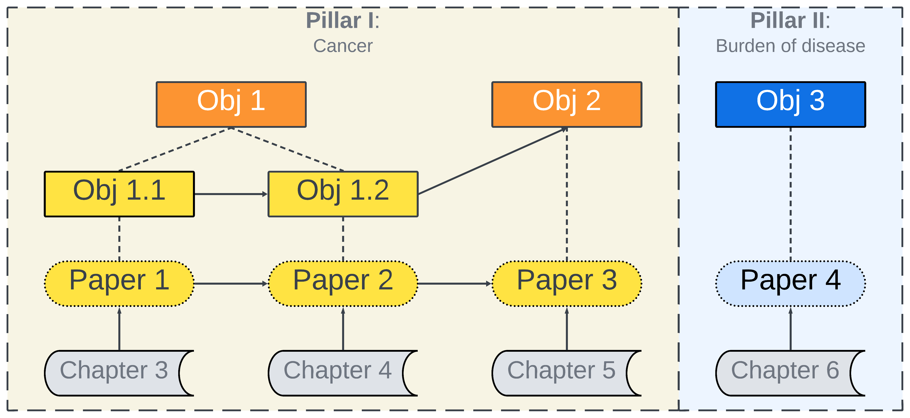
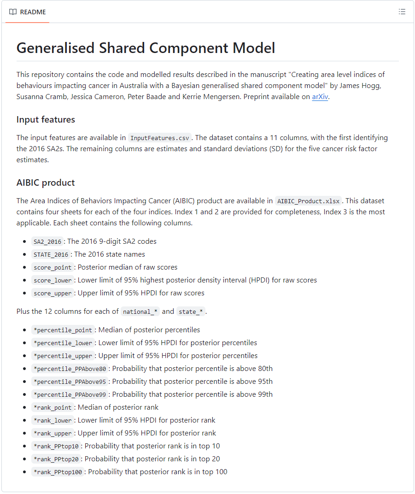

/**
* Log probability density of the leroux conditional autoregressive (LCAR) model
* @param x vector of random effects
* @param rho spatial dependence parameter
* MUST be strictly smaller than 1, use:
* `real<lower=0,upper=0.99> rho;`
* @param sigma standard deviation - often set to 1
* @param C_w Sparse representation of C
* @param C_v Column indices for values in C
* @param C_u Row starting indices for values in C
* @param offD_id_C_w indices for off diagonal terms
* @param D_id_C_w indices for diagonal terms - length M
* @param C_eigenvalues eigenvalues for C
* @param N number of areas
**
@return Log probability density
**
To use: LCAR_lpdf( x | rho, sigma, C_w, C_v, C_u, offD_id_C_w, D_id_C_w, C_eigenvalues, N );
*/
real LCAR_lpdf(
vector x,
real rho,
real sigma,
vector C_w ,
int [] C_v ,
int [] C_u ,
int [] offD_id_C_w ,
int [] D_id_C_w ,
vector C_eigenvalues,
int N
) {
vector[N] ldet_C;
vector [ num_elements(C_w) ] ImrhoC;
vector[N] A_S;
// Multiple off-diagonal elements by rho
ImrhoC [ offD_id_C_w ] = - rho * C_w[ offD_id_C_w ];
// Calculate diagonal elements of ImrhoC
ImrhoC [ D_id_C_w ] = 1 - rho * C_w[ D_id_C_w ];
A_S = csr_matrix_times_vector( N, N, ImrhoC, C_v, C_u, x );
ldet_C = log1m( rho * C_eigenvalues );
return -0.5 * (
N*log( 2 * pi() )
- ( N * log(1/square(sigma)) + sum( ldet_C ) )
+ 1/square(sigma) * dot_product(x, A_S)
);
}Enhancing Bayesian small area level methods with applications in health
James Hogg - PhD Final Seminar
Supervisors: Kerrie Mengersen (QUT), Susanna Cramb (QUT), Peter Baade (CCQ) and Jessica Cameron (CCQ)
8th April, 2024
Acknowledgement of Traditional Owners
QUT acknowledges the Turrbal and Yugara, as the First Nations owners of the lands where QUT now stands. We pay respect to their Elders, lores, customs and creation spirits. We recognize that these lands have always been places of teaching, research and learning.
QUT acknowledges the important role Aboriginal and Torres Strait Islander people play within the QUT community.
⛔
A single estimate representing all Australia
(e.g., rate of cancer)

✅
Many estimates representing all communities
\(=\) small area estimates
Motivation
- Small area estimates \(\to\) more effective comparisons
- Small area analysis
- Reporting/analyses of individual level data by aggregating into meaningful groups
Tricky in Australia!
Tricky in Australia!
- Highly heterogeneous population
- Sparsity \(\to\) Very little data
Sparsity
Leads to …
- Information only reliable or available \(\to\) large geographical regions (e.g., states)
- Reliable estimates mostly in major cities
Sparsity
Leads to …
- Information only reliable or available \(\to\) large geographical regions (e.g., states) (Low spatial resolution)
- Reliable estimates mostly in major cities (Poor reach)
Resolution
Reach
Resolution
Geographical and population size of the areas
Reach
Proportion of areas with estimates
Why we do need high resolution and reach?
- Reduces biases (e.g., Modifiable areal unit problem (MAUP) (Fotheringham & Wong, 1991), ecological bias, etc)
- Allows for more detailed investigation of spatial patterns
- Supports equity
Tricky in Australia!
- Highly heterogeneous population
- Sparsity \(\to\) Very little data
Sparsity
Worse with survey data
- International studies:
- Small area sample sizes greater than 50 (Parker et al., 2020; Vandendijck et al., 2016)
- Current Australian surveys:
- Small area sample sizes 5 to 13
Small area modelling
- Disease mapping (Cramb et al., 2020)
- Registry or administrative data
- Generates maps of risk for diseases
- Small area estimation (SAE) (Rao & Molina, 2015)
- Survey data
- Produce reliable estimates when sample sizes are small
- Bayesian inference is ubiquitous with both
Small area modelling in Australia
Increasingly relevant
Health outcomes exhibit variations based on geography (e.g., remoteness and socioeconomic status (AIHW, 2018, 2019; Duncan et al., 2019; Patterson et al., 2014; PHIDU, 2018))

Thesis aim
Develop and apply Bayesian small area methods to health data in Australia
üèπ Sparsity issues
üìà Improve spatial resolution
ü§î Support informed decision making
Cancer (Pillar I)
Burden of disease (Pillar II)
Cancer (Pillar I)
Burden of disease (Pillar II)
Background
- Cancer accounts for 19% of Australia’s total health burden 1 (AIHW, 2019)
- Prevention strategy
- Reduce prevalence of behaviours known to increase the risk of cancer (i.e., cancer risk factors).
- Smoking, obesity, poor diet, insufficient physical activity, excessive sun exposure, alcohol, etc
- Reduce prevalence of behaviours known to increase the risk of cancer (i.e., cancer risk factors).
- Prevalence of cancer risk factors varies geographically (Abdel-Rahman, 2021; AIHW, 2018; Berkowitz et al., 2016; CDC, 2021; Hermes & Poulsen, 2012; PHIDU, 2018; Ritchie & Roser, 2017)
Research Problem
The need to improve the spatial resolution and reach of small area level cancer risk factor estimates in Australia to enable more targeted cancer prevention strategies.
But wait…
- The Social Health Atlas estimates from…
- Most appropriate survey data available at the time: 2017-2018 National Health Survey (NHS)
- For small area modelling \(\to\) NHS is highly sparse survey data
- Modelling proportions with such sparse data gives rise to unique methodological challenges
NOTE:
Proportion \(=\) number of health outcomes / population
Proportion \(=\) prevalence
Research Problem
Lack of small area estimation methods for sparse survey data.
Objective 1
Small area estimation
- 1.1 Method: Develop a Bayesian SAE method for proportions, which specifically tackles data sparsity.
- 1.2 Application: Generate small area level proportion estimates for several cancer risk factors across Australia.
- Imagine we have high-resolution estimates for many cancer risk factors and many areas
- Challenge in decision making
- Striking the right balance between insufficient or overwhelming quantities of data.
Indices
- Interest in indices (Ceely, 2020; Hedibert et al., 2012; Hogan & Tchernis, 2004; Nardo et al., 2008; Nethery et al., 2015; Norwood et al., 2020)
- Single interpretable metric that describes a complex phenomenon
- Reduce the dimensionality of multivariate data
- Current empirical methods ⛔
- Restrictive
- Model-based methods ✅
- Complex data characteristics
Objective 2
Index creation
- 2.1 Method: Develop a Bayesian model-based approach to index creation.
- 2.2 Application: Using cancer risk factor data, create the first area-level cancer risk factor indices for Australia.
- High resolution and complete reach
Cancer (Pillar I)
Burden of disease (Pillar II)
Cancer (Pillar I)
Burden of disease (Pillar II)
Background
- Burden of disease (BOD) estimates inform health policy
- Fully Bayesian models are underused in full BOD studies 1
- Existing research has limitations (Bannick et al., 2019; Foreman et al., 2012; GBD 2015 Chronic Respiratory Disease Collaborators, 2017; MacNab, 2007, 2009; Steel et al., 2018)
- Full BOD studies in Australia (AIHW, 2022; DOHWA, 2020)
- No Bayesian and no small area estimates
Objective 3
Burden of disease
- 3.1 Method: Explore and develop appropriate Bayesian spatiotemporal methods to model the wide range of health data used in full BOD studies.
- 3.2 Application: Using two very different diseases 1, generate and map the first small area level BOD estimates in Australia.
Objectives, Chapters, Papers (Outputs)
Thesis format: Publication üìÉ
Chapter 3/Paper 1
A two-stage Bayesian small area estimation approach for proportions
Accepted for publication in the International Statistical Review
James Hogg, Jessica Cameron, Susanna Cramb, Peter Baade, Kerrie Mengersen. A two-stage Bayesian small area estimation approach for proportions.
Background
- Increasing demand \(\to\) robust small area estimates from smaller surveys
- Sparsity is key challenge when working with proportions
- Individual level and area level models pushed to extent and cannot address challenges
Use both?
Use both?
- Two-stage approaches have emerged (Das et al., 2022; Gao & Wakefield, 2023)
- Hints at benefits \(\to\) no full investigation
- Mitigate weakness of either model and leverage their strengths
Contribution üéâ
A Bayesian two-stage method for proportions that tackles data sparsity challenges.
Thesis aim
Develop and apply Bayesian small area methods to health data in Australia
üëâ Sparsity issues
Improve spatial resolution
Support informed decision making
The two-stage logistic normal (TSLN) approach
- Stage 1 (TSLN-S1)
- Fit a individual-level logistic model to the survey data
- Stage 1 (S1) estimates
- Using fitted values calculate area-level S1 estimates and sampling variances
- Stage 2 (TSLN-S2)
- Smooth S1 estimates and impute estimates for non-sampled areas using an area-level Fay-Herriot (1979) model
The TSLN approach
Stage 1
Individual level logistic model \[ \begin{eqnarray} y_{ij} &\sim& \text{Bernoulli}(p_{ij})^{\tilde{w}_{ij}} \\ \text{logit}(p_{ij}) &=& \mathbf{x}_{ij} \boldsymbol{\beta} + e_i \\ e_i &\sim& N(0, \sigma_e^2) \end{eqnarray} \]
where:
- \(y_{ij}\) is the binary response for sampled individual \(j\) in small area \(i\)
- \(p_{ij}\) is the probabilitiy for \(\dots\)
- \(\tilde{w}_{ij}\) is the sampled scaled weight for \(\dots\)
Stage 1 (S1) estimates
The S1 estimate 1 for area \(i\) is,
\[
\hat{\theta}_i^{\text{S1}} = \text{logit}\left( \frac{\sum_{j=1}^{n_i} w_{ij} p_{ij}}{n_i} \right)
\] with \(\gamma_i^{\text{S1}}\) is the corresponding sample variance.
where:
- \(w_{ij}\) is the sample weight for sampled individual \(j\) in small area \(i\)
- Sample weights in small area \(i\) sum to \(n_i\) (the area sample size)
Stage 2
The area level FH model is composed of: a
measurement error model, \[
\hat{\theta}_i^{\text{S1}} \sim N\left( \hat{\bar{\theta}}_i, \widehat{\text{v}}\left( \hat{\theta}_i^{\text{S1}} \right) \right),
\]
which accommodates some of the uncertainty of the stage 1 model; a
sampling model,
\[ \hat{\bar{\theta}}_i \sim N\left( \hat{\theta}_i, \gamma_i^{\text{S1}} \right), \]
which accommodates the sampling variance; and a
linking model,
\[ \begin{eqnarray} \hat{\theta}_i & = & \mathbf{Z}_{i} \boldsymbol{\lambda} + v_i \\ v_i & \sim & N(0, \sigma_v^2), \nonumber \end{eqnarray} \]
The parameter of interest (i.e. proportion) is the posterior distribution of \(\text{logit}^{-1}( \hat{\theta}_i)\).
Simulation study
Individual level
- LOG: Pseudo-likelihood logistic model
- Similar to stage 1 of the TSLN approach
Area level
- BETA: Beta model
- ELN: Empirical-logistic normal model
- Similar to stage 2 of the TSLN approach
Results

Results
Key findings üì¢
- TSLN approach provides superior proportion estimates in the sparse setting
- Similar bias but much smaller variance.
- Consistently smaller MSEs and credible intervals.
- Interval coverage more stable.
Objective 1
Small area estimation
❕ 1.1 Method: Develop a Bayesian SAE method for proportions, which specifically tackles data sparsity.
❕ 1.2 Application: Generate small area level prevalence estimates for several cancer risk factors across Australia.
Objective 1
Small area estimation
✅ 1.1 Method:
❕ 1.2 Application: Generate small area level prevalence estimates for several cancer risk factors across Australia.
Chapter 4/Paper 2
Mapping the prevalence of cancer risk factors at the small area level in Australia
Paper published
James Hogg, Jessica Cameron, Susanna Cramb, Peter Baade, Kerrie Mengersen. Mapping the prevalence of cancer risk factors at the small area level in Australia. International Journal of Health Geographics 22, 37 (2023). https://doi.org/10.1186/s12942-023-00352-5
Previously (SHA)
üõë Population health areas (n = 1,165)
üõë Missing estimates for very remote areas
Previously (SHA)
üõë Population health areas (n = 1,165)
üõë Missing estimates for very remote areas
Now (this work)
✅ Statistical area level 2 (n = 2,221)
✅ Estimates for very remote areas
Previously (SHA)
Now (this work)
Contribution üéâ
The first Australia-wide prevalence estimates for eight cancer risk factors at the statistical area level 2 (SA2) level.
Thesis aim
Develop and apply Bayesian small area methods to health data in Australia
Sparsity issues
üëâ Improve spatial resolution
üëâ Support informed decision making
Survey data
2017-18 National Health Survey
- Conducted by the Australian Bureau of Statistics (ABS)
- Sample size 17,248 persons 15 years and older
- Median SA2 sample size: 8
- 1,694 (76%) of SA2s had survey data
Auxiliary data
- 2016 Australian census data — collapsed to six principal components for analysis (Chidumwa et al., 2021)
- Average Estimated Resident Population between 2017 and 2018
- Index of Relative Socio-Economic Disadvantage (IRSD) from Socio-Economic Indexes for Areas by the ABS (ABS, 2016)
- Remoteness (ARIA+)
- Social Health Atlas estimates (PHIDU, 2018) at Primary Health Network (n = 31) and Population Health Area level (n = 1,165)
Model
- TSLN approach (Chapter 3 of this thesis)
- Single TSLN specification for all risk factors

Validation
How to check our estimates?
Validation
How to check our estimates?
- Internal: Fully Bayesian benchmarking (Zhang & Bryant, 2020)
- State benchmark (n = 7)
- Major cities-by-state benchmark (n = 12)
Validation
How to check our estimates?
- Internal: Fully Bayesian benchmarking (Zhang & Bryant, 2020)
- State benchmark (n = 7)
- Major cities-by-state benchmark (n = 12)
- External: Comparing our broad results to other Australian surveys and the Social Health Atlas

Risky alcohol consumption: Individuals exceeding the 2020 National Health and Medical Research Council (NHMRC) guidelines (2020) of up to 10 standard drinks per week and no more than 4 standard drinks on any day.


Key findings üì¢
- Prevalence of cancer risk factors \(\to\) considerable spatial disparities across Australia
- High spatial resolution estimates \(\to\) detailed understanding of spatial variation
Exciting…
These modelled estimates will be available in the Australian Cancer Atlas 2.0 (https://atlas.cancer.org.au/)
Objective 1
Small area estimation
✅ 1.1 Method:
❕ 1.2 Application: Generate small area level prevalence estimates for several cancer risk factors across Australia.
Objective 1
Small area estimation
✅ 1.1 Method:
✅ 1.2 Application:
Chapter 5/Paper 3
Creating area level indices of behaviours impacting cancer in Australia with a Bayesian generalised shared component model
Under review at Health & Place
James Hogg, Susanna Cramb, Jessica Cameron, Peter Baade, Kerrie Mengersen. Creating area level indices of behaviours impacting cancer in Australia with a Bayesian generalised shared component model.
Status: Submitted
Background
- Resolution and accessibility of health data for small areas have improved considerably
- BUT…
- Increasing quantity and complexity of such data can make it more challenging to:
- Collate
- Draw meaningful conclusions
- Formulate effective policy decisions
Indices
Indices
- Measures a multifaceted concept that cannot be captured by a single feature.
- Often can help:
- Determine priorities for future policies
- Benchmark or monitor the performance of current policies
Creating indices with models
- Increasingly popular (Hedibert et al., 2012; Hogan & Tchernis, 2004; Nethery et al., 2015; Norwood et al., 2020)
- Shared component model (SCM) (Knorr-Held & Best, 2001)
- Identify underlying factor shared between features (e.g., Index)
- Single shared factor
- No heteroscedastic error
Generalised shared component model
Generalised shared component model
- Multiple shared factors
- Heteroscedastic error
- Provides indices with uncertainty measures
Area Indices of
Behaviors Impacting
Cancer (AIBIC) product
Contribution üéâ
- A Bayesian model-based method for index creation.
- The first Australia-wide area level cancer risk factor indices.
Thesis aim
Develop and apply Bayesian small area methods to health data in Australia
Sparsity issues
Improve spatial resolution
üëâ Support informed decision making
Generalised Shared Component Model (GSCM)
\(N\)-dimensional multivariate normal distribution for the \(k\)th feature
\[ \begin{eqnarray} \mathbf{Y}_{k} & \sim & \text{MVN}_{N}\left( \boldsymbol{\mu}_{k}, \text{diag}\left( \boldsymbol{\sigma}_k \right) \right) \\ \boldsymbol{\mu}_{k} & = & \mathbf{z} \left( \boldsymbol{\Lambda}_k \right)^T + \boldsymbol{\epsilon}_{k} \end{eqnarray} \]
Where:
- \(\mathbf{Y}_{k}\) is \(N\)-dimensional vector of estimates for the \(k\)th feature
- \(\boldsymbol{\sigma}_k\) is \(N\)-dimensional vector of standard deviations for the \(k\)th feature
- \(\boldsymbol{\mu}_{k}\) is \(N\)-dimensional vectors of true values for the \(k\)th feature
- \(\mathbf{z}\) is \(N \times L\) matrix of shared factor scores, with independent columns
- Leroux CAR priors (Leroux et al., 2000)
- \(\boldsymbol{\epsilon}_{k}\) is \(N\)-dimensional vector of feature-specific residual errors for the \(k\)th feature with associated variance \(\tau_k^2\)
- Leroux CAR priors
- \(\boldsymbol{\Lambda}_k\) is \(k\)th row of the \(K\) by \(L\) factor loadings matrix
Identifiability is enforced by:
- Shared factors are homoscedastic (variances \(=1\)) (Nethery et al., 2015; Wang & Wall, 2003)
- Hierarchical structural constraint (Aguilar & West, 2000)
- Factor loading matrix, \(\boldsymbol{\Lambda}\), is constrained to be lower triangular with strictly positive diagonal entries (Nethery et al., 2015)
Special cases:
- Traditional shared component model
- Bayesian spatial factor models (Mezzetti, 2012; Nethery et al., 2015)
- Generic Bayesian factor model
Input data
- Small area estimates of five features (cancer risk factor OR unhealthy behaviors) from Chapter 4
- Current smokers, risky alcohol consumption, overweight/obese, inadequate diet and inadequate physical
- Available as point estimates and standard deviations of proportions (inverse logit transformed)
Input data
Input data
- Small area estimates of five features (cancer risk factor OR unhealthy behaviors) from Chapter 4
- Current smokers, risky alcohol consumption, overweight/obese, inadequate diet and inadequate physical
- Available as point estimates and standard deviations of proportions (inverse logit transformed)
- Details
- Number of features \(K = 5\)
- Number of small areas \(N = 2221\)
- Number of shared factors \(L = 2\)
Results
Posterior medians (and 95% highest posterior density intervals) of the factor loadings.
The four indices
Factor 1: \(z_{n1}\)
Factor 2: \(z_{n2}\)
Health Behavior Index (HBI): \(w_1 z_{n1} + w_2 z_{n2}\)
Population Adjusted Health Behaviors Index (PAHBI): \(P_n \left( w_1 z_{n1} + w_2 z_{n2} \right)\)
Interpretation
Point estimates:
- Higher values of the index \(\approx\) higher prevalence of unhealthy behaviours
Uncertainty:
- Probabilistic statements about the indices (e.g., exceedance probabilities)
Laurieton - Bonny Hills (NSW)
Modelled percentages -
10 numbers!
Inadequate physical activity: 84% (±2.8%) 1
Risky alcohol consumption: 39% (±4.1%)
Inadequate diet: 50% (±3.9%)
Overweight/obese: 78% (±2.9%)
Current smoking: 22% (±3.7%)
Health Behaviors Index (HBI) -
2 numbers!
Percentile: 98
Probability that percentile above 80th: 0.99
Population Adjusted HBI
Percentile: 100
Probability that percentile above 80th: 1.00
Key findings üì¢
- The AIBIC reveals a pronounced spatial autocorrelation in unhealthy behaviors
- Patterns reflect remoteness and socioeconomic categories
- Faster to interpret than individual prevalence estimates
- Optimal for broad policies
Exciting…
The indices (AIBIC) are on Github
- Point estimates, intervals, and posterior probabilities
- Percentiles and ranks computed both nationally and for each of the eight states and territories of Australia.

Objective 2
Index creation
❕ 2.1 Method: Develop a Bayesian model-based approach to index creation.
❕ 2.2 Application: Using cancer risk factor data, create the first area-level cancer risk factor indices for Australia.
Objective 2
Index creation
✅ 2.1 Method:
✅ 2.2 Application:
Chapter 6/Paper 4
Improving the spatial and temporal resolution of burden of disease measures with Bayesian models 
Under review at Spatial and Spatio-temporal Epidemiology
James Hogg, K. Staples, A. Davis, S. Cramb, C. Patterson, L. Kirkland, M. Gourley, J. Xiao, W. Sun. Improving the spatial and temporal resolution of burden of disease measures with Bayesian models.
Status: Second round of revisions
Partnership with the Department of Health Western Australia and the Australian Institute of Health and Welfare
Background
- BOD estimates \(\to\) identify diseases causing excess burden (AIHW, 2019; Murray & Acharya, 1997; Naghavi et al., 2017; Schmidt et al., 2020; Steel et al., 2018)
- Disability-adjusted life years (DALY)
- Linear and non-linear combinations of fatal (e.g., mortality) and non-fatal (e.g., prevalence) burden
- Fatal component \(=\) ‘years of life lost’ (YLL)
- Non-fatal component \(=\) ‘years lived with disability’ (YLD)
Full BOD studies
- Aim to calculate DALYs for all causes (typically over 200)
- Prioritise healthcare resources by ranking diseases
- Wide range of data sources (e.g., registry, administrative, survey or epidemiological)
- Conducted by government agencies in Australia
Gaps
Gaps
- Few studies use Bayesian models (Foreman et al., 2012; GBD 2015 Chronic Respiratory Disease Collaborators, 2017; MacNab, 2007, 2009; Steel et al., 2018)
- Not applicable to full scope of data
- No use of small area estimation methods
- Not practical for many users (e.g., government)
- Australian full BOD studies
- No use of Bayesian models and no small area estimates
Contribution üéâ
A principled and practical set of Bayesian spatiotemporal methods for modelling the wide range of data in full BOD studies.
Thesis aim
Develop and apply Bayesian small area methods to health data in Australia
üëâ Sparsity issues
üëâ Improve spatial resolution
üëâ Support informed decision making
Models
- Intentionally simple \(\to\) accessible and practical
- Novelty
- Not in the development of new Bayesian models
- Application of existing models to the field of BOD
Models
Standard age-year-time (SAYT) model
- Model details:
- Poisson model
- Population as offset
- Spatial, temporal and space-time random effects
- Input data:
- Aggregated counts by area, year, age, and sex
- Output data:
- Smoothed counts for each area, year, age, and sex
- Applicable to:
- Mortality or prevalence counts
Models
Weighted multilevel regression and poststratification (MrP)
First use of small area estimation in BOD
- Model details:
- Logistic model with poststratification step (Park et al., 2004)
- Pseudo-likelihood (Savitsky & Toth, 2016)
- Spatial and temporal random effects
- Input data: Individual level data
- Output data: Probabilities for all combinations of area, year, age, and sex
- Applicable to:
- Survey microdata
Case study
- Data was supplied by Department of Health Western Australia (DOHWA)
- Two conditions: Asthma and coronary heart disease (CHD)
- Geographic: Local Government Areas (n = 137) in Western Australia
- Time: 2015 to 2020 inclusive
- Used fully Bayesian methods with the statistical software package, \(\texttt{nimble}\) (Valpine et al., 2017)
Objective
- Produce modelled estimates of:
- Mortality and age-standardised ‘years of life lost’ (ASYLLs)
- Prevalence/proportions and age-standardised ‘years lived with disability’ (ASYLDs)
- Compare to raw results (i.e., no modelling)

Key findings üì¢
- Bayesian models \(\to\) increased the reliability, certainty and reportability of estimates
- Bayesian vs. raw:
- Agreed (mostly!)
- Discrepancies due to age-standardisation OR paradigm differences 1
Objective 3
Burden of disease
❕ 3.1 Method: Explore and develop appropriate Bayesian spatiotemporal methods to model the wide range of health data used in full BOD studies.
❕ 3.2 Application: Using two very different diseases, generate and map the first small area level BOD estimates in Australia.
Objective 3
Burden of disease
✅ 3.1 Method:
✅ 3.2 Application:
Thesis summary
We made it. üéâ Take a breath.
Contributions
- Bayesian two-stage logistic normal (TSLN) approach for proportions (Chapter 3)
- Cancer risk factor estimates for the 2221 small areas across Australia (Chapter 4)
- Generalised shared component model (GSCM) (Chapter 5)
- Area Indices of Behaviors Impacting Cancer (AIBIC) product (Chapter 5)
- Principled and practical set of Bayesian spatiotemporal methods for BOD in Australia (Chapter 6)

Impact
- Novel Bayesian models push boundary of previously achievable \(\to\) spatial and temporal resolution and reach in Australia (Chapters 3 and 6)
- Modelled risk factors \(\to\) Australian Cancer Atlas platform (Chapter 4)
- Epidemiologists from the West Moreton Public Health Unit \(\to\) interest in utilising estimates for reporting (Chapter 4)
- Department of Health Western Australia (DOHWA) applied methods \(\to\) generate new estimates for their Public Health Atlas (Chapter 6)

Impact
- Interest in adopting Bayesian modelling (Chapter 6)
- The Burden of Disease and Mortality specialist group (Australian Institute of Health and Welfare)
- Efficient implementation of the Leroux prior (2000) in the statistical software package, \(\texttt{stan}\) (Stan Development Team, 2023) (Chapter 5)
Reflections/future directions
- Theory/model expansion
- Multivariate variations
- Validate small area estimation (Chapter 3 and 4)
- Expansion of NHS
- Appending state surveys
- \(+\) Health behaviours \(\to\) the census
- Validate BOD methods and models (Chapter 6)
- Disease states assumed constant and discrete
- Many types of measurement error
Reflections/future directions
- Temporal dimension for the:
- TSLN approach (Chapters 3 and 4)
- GSCM (Chapter 5)
- Indices (Chapter 5)
- Temporal consistency
- Robustness
- Aggregation (Modifiable areal unit problem (MAUP) (Fotheringham & Wong, 1991))
Professional engagements/activities
- 11 conferences (including 2\(\times\) international conferences): 8 talks \(+\) 3 posters
- Internship and statistical consulting for Department of Health Western Australia (DOHWA)
- Casual statistical consulting for Environmental Protection Authority (EPA) Victoria
- Co-chair of the Bayesian Research and Applications Group (BRAG)
- Organised and hosted virtual StanConnect conference
- Worked with BioGro as part of Good Data Institute hackathon
- Team awarded 1st place
- 2023 United Nations Datathon
- Team awarded 2nd place globally out of over 200 teams
Acknowledgments
- Supervisors: Kerrie Mengersen, Susanna Cramb, Peter Baade and Jessica Cameron
- Australian Cancer Atlas 2.0 project team
- Government collaborators: DOHWA and AIHW
- PhD stipend and travel funding: Cancer Council Queensland, QUT
- Others:
- ABS
- Colleagues (you rock üé∏)
- My family (particularly my Mum!)
- My partner
- Friends
Abdel-Rahman, O. (2021). Disparities in modifiable cancer risk factors among canadian provinces, territories, and health regions [Journal Article]. Current Medical Research and Opinion, 37, 1–17. https://doi.org/10.1080/03007995.2021.1971184
ABS. (2016). Technical paper: Socio-Economic Indexes for Areas (SEIFA) [Report]. Australian Bureau of Statistics,. https://www.ausstats.abs.gov.au/ausstats/subscriber.nsf/0/756EE3DBEFA869EFCA258259000BA746/$File/SEIFA%202016%20Technical%20Paper.pdf
Aguilar, O., & West, M. (2000). Bayesian dynamic factor models and portfolio allocation [Journal Article]. Journal of Business and Economic Statistics, 18(3), 338–357.
AIHW. (2018). Australia’s health 2018 [Report]. Australian Institute of Health; Welfare. https://doi.org/10.25816/5ec1e56f25480
AIHW. (2019). Australian burden of disease study: Impact and causes of illness and death in Australia 2015 [Report]. Australian Institute of Health; Welfare. https://doi.org/10.25816/5ebca2a4fa7dc
AIHW. (2022). Burden of disease. Australian Institute of Health; Welfare. https://www.aihw.gov.au/reports-data/health-conditions-disability-deaths/burden-of-disease/overview
Australian Bureau of Statistics. (2017). 4363.0 - national health survey: Users’ guide, 2017-18 [Dataset].
Bannick, M. S., McGaughey, M., & Flaxman, A. D. (2019). Ensemble modelling in descriptive epidemiology: Burden of disease estimation. International Journal of Epidemiology, 49(6), 2065–2073. https://doi.org/10.1093/ije/dyz223
Berkowitz, Z., Zhang, X. Y., Richards, T. B., Peipins, L., Henley, J., & Holt, J. (2016). Multilevel small-area estimation of multiple cigarette smoking status categories using the 2012 Behavioral Risk Factor Surveillance System [Journal Article]. Cancer Epidemiology Biomarkers and Prevention, 25(10), 1402–1410. https://doi.org/10.1158/1055-9965.Epi-16-0244
CDC. (2021). PLACES: Local data for better health [Web Page]. Centre for Disease Control. https://www.cdc.gov/places
Ceely, G. (2020). Methods used to develop the Health Index for England: 2015 to 2018 [Report]. Office for National Statistics, United Kingdom. https://www.ons.gov.uk/peoplepopulationandcommunity/healthandsocialcare/healthandwellbeing/methodologies/methodsusedtodevelopthehealthindexforengland2015to2018#developing-the-health-index
Chidumwa, G., Maposa, I., Kowal, P., Micklesfield, L. K., & Ware, L. J. (2021). Bivariate joint spatial modeling to identify shared risk patterns of hypertension and diabetes in south africa: Evidence from WHO SAGE south africa wave 2 [Journal Article]. International Journal of Environmental Research and Public Health, 18(1), 359.
Cramb, S., Duncan, E., Baade, P., & Mengersen, K. L. (2020). A comparison of Bayesian spatial models for cancer incidence at a small area level: Theory and performance [Book Section]. In K. L. Mengersen, P. Pudlo, & C. P. Robert (Eds.), Case studies in applied Bayesian data science (pp. 245–274). Springer International Publishing. https://doi.org/10.1007/978-3-030-42553-1_10
Das, S., Brakel, J. van den, Boonstra, H. J., & Haslett, S. (2022). Multilevel time series modelling of antenatal care coverage in bangladesh at disaggregated administrative levels. Survey Methodology, 48(2). http://www.statcan.gc.ca/pub/12-001-x/2022002/article/00010-eng.htm
Department of Health. (2014). Physical activity and exercise guidelines for all australians [Web Page]. https://www.health.gov.au/resources/collections/collection-of-physical-activity-and-sedentary-behaviour-guidelines-for-all-ages
DOHWA. (2020). Western Australian burden of disease study 2015 - summary report [Report]. Department of Health Western Australia; Department of Health WA.
Duncan, E. W., Cramb, S. M., Aitken, J. F., Mengersen, K. L., & Baade, P. D. (2019). Development of the Australian cancer atlas: Spatial modelling, visualisation, and reporting of estimates [Journal Article]. International Journal of Health Geographics, 18(1). https://doi.org/10.1186/s12942-019-0185-9
Fay, R. E., & Herriot, R. A. (1979). Estimates of income for small places: An application of james-stein procedures to census data [Journal Article]. Journal of the American Statistical Association, 74(366), 269–277. https://doi.org/10.2307/2286322
Foreman, K. J., Lozano, R., Lopez, A. D., & Murray, C. J. (2012). Modeling causes of death: An integrated approach using CODEm. Population Health Metrics, 10(1), 1. https://doi.org/10.1186/1478-7954-10-1
Fotheringham, A. S., & Wong, D. W. S. (1991). The modifiable areal unit problem in multivariate statistical analysis [Journal Article]. Environment and Planning A: Economy and Space, 23(7), 1025–1044. https://doi.org/10.1068/a231025
Gao, P. A., & Wakefield, J. (2023). Smoothed model-assisted small area estimation of proportions. Canadian Journal of Statistics. https://doi.org/https://doi.org/10.1002/cjs.11787
GBD 2015 Chronic Respiratory Disease Collaborators. (2017). Global, regional, and national deaths, prevalence, disability-adjusted life years, and years lived with disability for chronic obstructive pulmonary disease and asthma, 1990–2015: A systematic analysis for the global burden of disease study 2015. Lancet Respiratory Medicine, 5(9). https://doi.org/10.1016/S2213-2600(17)30293-X
Health, N., & Council, M. R. (2013). Australian dietary guidelines [Report]. National Health; Medical Research Council.
Hedibert, F. L., Alexandra, M. S., Esther, S., Mariana, G., & Marcel, A. (2012). Measuring the vulnerability of the uruguayan population to vector-borne diseases via spatially hierarchical factor models [Journal Article]. The Annals of Applied Statistics, 6(1), 284–303. https://doi.org/10.1214/11-AOAS497
Hermes, K., & Poulsen, M. (2012). Small area estimates of smoking prevalence in london. Testing the effect of input data [Journal Article]. Health and Place, 18(3), 630–638. https://doi.org/10.1016/j.healthplace.2011.12.010
Hogan, J. W., & Tchernis, R. (2004). Bayesian factor analysis for spatially correlated data, with application to summarizing area-level material deprivation from census data [Journal Article]. Journal of the American Statistical Association, 99(466), 314–324. https://doi.org/10.1198/016214504000000296
Knorr-Held, L., & Best, N. G. (2001). A shared component model for detecting joint and selective clustering of two diseases [Journal Article]. Journal of the Royal Statistical Society Series A: Statistics in Society, 164(1), 73–85. https://doi.org/10.1111/1467-985X.00187
Lee, D. (2011). A comparison of conditional autoregressive models used in Bayesian disease mapping [Journal Article]. Spatial and Spatio-Temporal Epidemiology, 2(2), 79–89. https://doi.org/10.1016/j.sste.2011.03.001
Leroux, B., Lei, X., & Breslow, N. (2000). Estimation of disease rates in small areas: A new mixed model for spatial dependence [Book Section]. In Statistical models in epidemiology, the environment, and clinical trials (Vol. 116, pp. 179–191). Springer.
MacNab, Y. C. (2007). Mapping disability-adjusted life years: A Bayesian hierarchical model framework for burden of disease and injury assessment [Journal Article]. Statistics in Medicine, 26(26), 4746–4769. https://doi.org/https://doi.org/10.1002/sim.2890
MacNab, Y. C. (2009). Bayesian multivariate disease mapping and ecological regression with errors in covariates: Bayesian estimation of DALYs and “preventable” DALYs [Journal Article]. Statistics in Medicine, 28(9), 1369–1385. https://doi.org/https://doi.org/10.1002/sim.3547
Mezzetti, M. (2012). Bayesian factor analysis for spatially correlated data: Application to cancer incidence data in scotland [Journal Article]. Statistical Methods and Applications, 21, 49–74. https://doi.org/https://doi.org/10.1007/s10260-011-0177-9
Murray, C., & Acharya, A. (1997). Understanding DALYs. Journal of Health Economics, 16, 703–730. https://doi.org/10.1016/s0167-6296(97)00004-0
Naghavi, M., Abajobir, A. A., Abbafati, C., Abbas, K. M., Abd-Allah, F., Abera, S. F., Aboyans, V., Adetokunboh, O., Afshin, A., Agrawal, A., Ahmadi, A., Ahmed, M. B., Aichour, A. N., Aichour, M. T. E., Aichour, I., Aiyar, S., Alahdab, F., Al-Aly, Z., Alam, K., … Murray, C. J. L. (2017). Global, regional, and national age-sex specific mortality for 264 causes of death, 1980–2016: A systematic analysis for the Global Burden of Disease Study 2016. The Lancet, 390(10100), 1151–1210. https://doi.org/https://doi.org/10.1016/S0140-6736(17)32152-9
Nardo, M., Saisana, M., Saltelli, A., Tarantola, S., Hoffmann, A., Giovannini, E., Stevens, C., Baygan, G., Olsen, K., & Moore, S. (2008). Handbook on constructing composite indicators [Report]. European Commission. https://www.oecd.org/els/soc/handbookonconstructingcompositeindicatorsmethodologyanduserguide.htm
National Health and Medical Research Council. (2020). Australian guidelines to reduce health risks from drinking alcohol [Report]. National Health; Medical Research Council. https://doi.org/978-1-86496-071-6
Nethery, R. C., Warren, J. L., Herring, A. H., Moore, K. A., Evenson, K. R., & Diez-Roux, A. V. (2015). A common spatial factor analysis model for measured neighborhood-level characteristics: The multi-ethnic study of atherosclerosis [Journal Article]. Health Place, 36, 35–46. https://doi.org/10.1016/j.healthplace.2015.08.009
Norwood, T. A., Encisa, C., Wang, X., Seliske, L., Cunningham, J., & De, P. (2020). A Bayesian shared components modeling approach to develop small area indicators of social determinants of health with measures of uncertainty [Journal Article]. Canadian Journal of Public Health, 111(3), 342–357. https://doi.org/10.17269/s41997-020-00321-6
Park, D. K., Gelman, A., & Bafumi, J. (2004). Bayesian multilevel estimation with poststratification: State-level estimates from national polls [Journal Article]. Political Analysis, 12(4), 375–385.
Parker, P. A., Janicki, R., & Holan, S. H. (2020). Unit level modeling of survey data for small area estimation under informative sampling: A comprehensive overview with extensions [Journal Article]. arXiv Preprint arXiv:1908.10488v2. https://doi.org/arXiv:1908.10488v2
Patterson, K. A. E., Cleland, V., Venn, A., Blizzard, L., & Gall, S. (2014). A cross-sectional study of geographic differences in health risk factors among young Australian adults: The role of socioeconomic position [Journal Article]. BMC Public Health, 14(1). https://doi.org/10.1186/1471-2458-14-1278
PHIDU. (2018). Social health atlases of Australia [Online Database]. Public Health Information Development Unit. https://phidu.torrens.edu.au/social-health-atlases
Rao, J. N. K., & Molina, I. (2015). Small area estimation (2nd ed.) [Book]. Wiley Series in Survey Methodology.
Riebler, A., Sørbye, S. H., Simpson, D., & Rue, H. (2016). An intuitive Bayesian spatial model for disease mapping that accounts for scaling. Statistical Methods in Medical Research, 25(4), 1145–1165. https://doi.org/10.1177/0962280216660421
Ritchie, H., & Roser, M. (2017). Obesity (Web Page November 2021). https://ourworldindata.org/obesity
Savitsky, T. D., & Toth, D. (2016). Bayesian estimation under informative sampling [Journal Article]. Electronic Journal of Statistics, 10(1), 1677–1708.
Schmidt, J., Fox, S., Hughes, A., Betts, A., Flowers, J., Newton, J., & Clark, S. (2020). The Burden of Disease in England compared with 22 peer countries: A report for NHS England [Report]. Public Health England. https://assets.publishing.service.gov.uk/government/uploads/system/uploads/attachment_data/file/856938/GBD_NHS_England_report.pdf
Stan Development Team. (2023). Stan [Computer Program]. https://mc-stan.org
Steel, N., Ford, J. A., Newton, J. N., Davis, A. C. J., Vos, T., Naghavi, M., Glenn, S., Hughes, A., Dalton, A. M., Stockton, D., Humphreys, C., Dallat, M., Schmidt, J., Flowers, J., Fox, S., Abubakar, I., Aldridge, R. W., Baker, A., Brayne, C., … Murray, C. J. L. (2018). Changes in health in the countries of the UK and 150 english local authority areas 1990–2016: A systematic analysis for the global burden of disease study 2016. The Lancet, 392(10158), 1647–1661. https://doi.org/10.1016/S0140-6736(18)32207-4
Valpine, P. de, Turek, D., Paciorek, C. J., Anderson-Bergman, C., Lang, D. T., & Bodik, R. (2017). Programming with models: Writing statistical algorithms for general model structures with NIMBLE [Journal Article]. Journal of Computational and Graphical Statistics, 26(2), 403–413. https://doi.org/10.1080/10618600.2016.1172487
Vandendijck, Y., Faes, C., Kirby, R. S., Lawson, A., & Hens, N. (2016). Model-based inference for small area estimation with sampling weights [Journal Article]. Spatial Statistics, 18, 455–473. https://doi.org/10.1016/j.spasta.2016.09.004
Wang, F., & Wall, M. M. (2003). Generalized common spatial factor model [Journal Article]. Biostatistics, 4(4), 569–582. https://doi.org/10.1093/biostatistics/4.4.569
Zhang, J. L., & Bryant, J. (2020). Fully Bayesian benchmarking of small area estimation models [Journal Article]. Journal of Official Statistics, 36(1), 197–223. https://doi.org/10.2478/jos-2020-0010
Chapter 3/Paper 1
| Sampled areas | Nonsampled areas | ||||||||
|---|---|---|---|---|---|---|---|---|---|
| MRRMSE | MARB | CI width | Coverage | MRRMSE | MARB | CI width | Coverage | ||
| 50-50 | BETA | 0.36 (2.17) | 0.22 (1.96) | 0.46 | 0.80 | 0.40 (2.29) | 0.16 (1.35) | 0.61 | 1.00 |
| BIN | 0.39 (2.38) | 0.38 (3.35) | 0.18 | 0.03 | 0.40 (2.30) | 0.38 (3.29) | 0.20 | 0.03 | |
| ELN | 0.34 (2.08) | 0.21 (1.84) | 0.43 | 0.91 | 0.40 (2.32) | 0.15 (1.32) | 0.64 | 1.00 | |
| LOG | 0.25 (1.52) | 0.16 (1.41) | 0.32 | 0.90 | 0.28 (1.61) | 0.10 (0.83) | 0.47 | 1.00 | |
| TSLN | 0.17 (1.00) | 0.11 (1.00) | 0.22 | 0.94 | 0.17 (1.00) | 0.12 (1.00) | 0.23 | 0.95 | |
| Rare | BETA | 0.47 (1.46) | 0.31 (1.39) | 0.21 | 0.66 | 0.51 (1.57) | 0.22 (1.08) | 0.34 | 0.97 |
| BIN | 0.50 (1.54) | 0.48 (2.16) | 0.12 | 0.08 | 0.50 (1.54) | 0.47 (2.29) | 0.13 | 0.08 | |
| ELN | 0.78 (2.42) | 0.55 (2.52) | 0.39 | 0.68 | 1.03 (3.17) | 0.20 (0.96) | 0.77 | 1.00 | |
| LOG | 0.50 (1.55) | 0.35 (1.60) | 0.28 | 0.82 | 0.55 (1.68) | 0.15 (0.73) | 0.43 | 1.00 | |
| TSLN | 0.32 (1.00) | 0.22 (1.00) | 0.19 | 0.86 | 0.32 (1.00) | 0.21 (1.00) | 0.20 | 0.88 | |
| Common | BETA | 0.16 (2.01) | 0.09 (1.76) | 0.31 | 0.89 | 0.18 (2.25) | 0.04 (0.87) | 0.43 | 1.00 |
| BIN | 0.25 (3.13) | 0.24 (4.80) | 0.19 | 0.05 | 0.25 (3.04) | 0.23 (4.64) | 0.21 | 0.08 | |
| ELN | 0.12 (1.52) | 0.07 (1.37) | 0.26 | 0.98 | 0.13 (1.58) | 0.06 (1.18) | 0.31 | 1.00 | |
| LOG | 0.11 (1.40) | 0.06 (1.28) | 0.24 | 0.97 | 0.12 (1.45) | 0.05 (0.99) | 0.29 | 1.00 | |
| TSLN | 0.08 (1.00) | 0.05 (1.00) | 0.16 | 0.98 | 0.08 (1.00) | 0.05 (1.00) | 0.17 | 0.99 |
Chapter 4/Paper 2
Cancer Risk Factors
- Smoking
- Current smoking: Individuals who identify as current smokers, whether they smoke daily, weekly, or less frequently, and have smoked at least 100 cigarettes in their lifetime.
- Alcohol
- Risky alcohol consumption: Individuals exceeding the 2020 National Health and Medical Research Council (NHMRC) guidelines (National Health and Medical Research Council, 2020) of up to 10 standard drinks per week and no more than 4 standard drinks on any day, assessed via self-reported alcohol consumption over the last three drinking days from the preceding week.
- Diet
- Inadequate diet: Based on self-reported dietary intake, individuals failing to meet both the fruit (2 serves/day) and vegetable (5 serves/day) requirements as per the 2013 NHMRC Australian Dietary Guidelines (Health & Council, 2013).
- Weight
- Obese: Individuals with a Body Mass Index (BMI) of 30 or higher.
- Overweight/obese: Individuals with a BMI of 25 or higher.
- Risky waist circumference: Individuals with waist circumference measurements of ≥94cm (men) and ≥80cm (women), focusing on adults aged 18 years and older (PHIDU, 2018).
- Physical Activity
- Inadequate activity (leisure): Based on self-reported leisure physical activity, individuals who do not meet the 2014 Department of Health Physical Activity guidelines (Department of Health, 2014), which include a mix of moderate and vigorous-intensity physical activities, plus muscle-strengthening activities.
- Inadequate activity (all): Similar to inadequate activity (leisure) but includes both workplace and leisure self-reported physical activities.

Validating non-sampled SA2s and those in very remote areas
- Warning from the ABS (Australian Bureau of Statistics, 2017)
`. . . the estimates from the survey, do not (and are not intended to) match estimates of the total Australian estimated resident population (which include persons living in Very Remote areas of Australia and persons in non-private dwellings, such as hotels) obtained from other sources’
- Not included in internal benchmarking
- Warning that direct estimates for the Northern Territory (NT) could be inaccurate
- Not included in internal benchmarking
Validating non-sampled SA2s and those in very remote areas
- These excluded regions \(\approx\) 1.5% of the population
- Validated using the external methods
- Exhibit much greater uncertainty (as expected)
- Future work
- Utilise smaller surveys taken in these areas as validation datasests
Chapter 5/Paper 3
Efficient LCAR
Chapter 6/Paper 4
Standard age-year-time (SAYT) model
Let:
- \(y_{ita}\) be the raw mortality counts in age group \(a = 1, \dots, A\), area \(i = 1, \dots, M\) and time \(t = 1, \dots, T\)
- \(\xi_{it}\) be the random effect for the \(i\)th area and \(t\)th year
- \(\theta_i\), the spatial random effect, is modeled using a BYM2 spatial prior (Riebler et al., 2016);
- \(\gamma_t\), the temporal random effect, is modeled using an intrinsic conditional autoregressive prior (Lee, 2011); and
- \(\delta_{it}\), the space-time random effect, is modeled using a standard normal distribution (Type I interaction) which assumes independent variation
- \(\alpha\) be an intercept
- \(N_{ita}\) be the population.
Model \[ \begin{align} y_{ita} & \sim \text{Poisson}\left( \mu_{ita} \right) \\ \log\left( \mu_{ita} \right) & = \log\left( N_{ita} \right) + \alpha + \beta_a + \xi_{it} \end{align} \]
Weighted Multilevel Regression and poststratification (MrP)
\[ \begin{eqnarray} z_{itaf} & \sim & \text{Bernoulli}\left( \pi_{itaf} \right)^{\tilde{w}_{itaf}} \label{eq:wmrp} \\ \text{logit}\left( \pi_{itaf} \right) & = & \alpha_{af} + \mathbf{x}_{it} \boldsymbol{\beta} + \theta_i + \gamma_t, \nonumber \\ \alpha_{af} & \sim & \text{N}\left( 0, 1000^2 \right) \nonumber \\ \boldsymbol{\theta} & \sim & \text{BYM2}\left( \mathbf{W}^{\text{S}}, \rho, \kappa, \sigma_\theta^2 \right) \nonumber \\ \boldsymbol{\gamma} & \sim & \text{ICAR}\left( \mathbf{W}^{\text{T}}, \sigma_\gamma^2 \right) \nonumber \end{eqnarray} \]
Prediction \[ YLD^{(d)}_{it} = \sum_{f,a,h} \pi^{(d)}_{itaf} N_{itaf} \psi_h e_h \]
James Hogg
Social Health Atlas of Australia 1
üòä Prevalence estimates of cancer risk factors for small areas
üò® Estimates suffer from resolution and reach issues